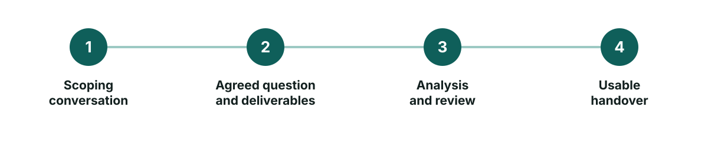
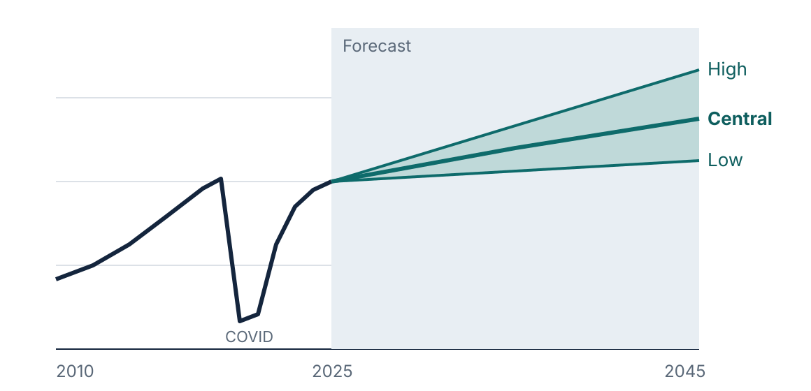
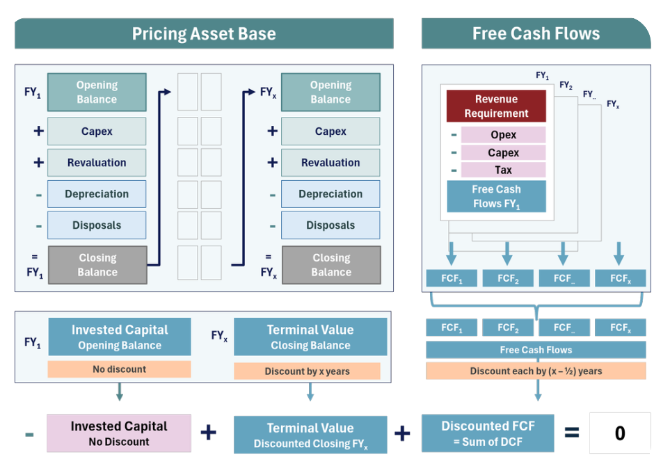
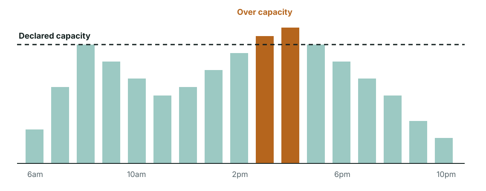
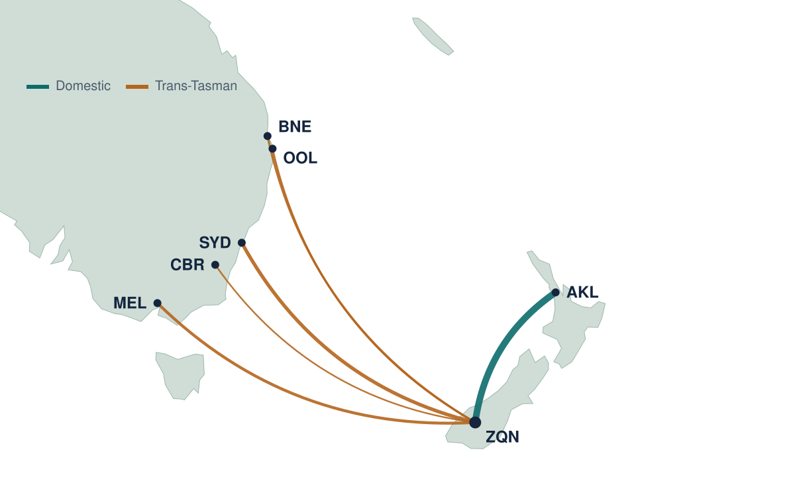
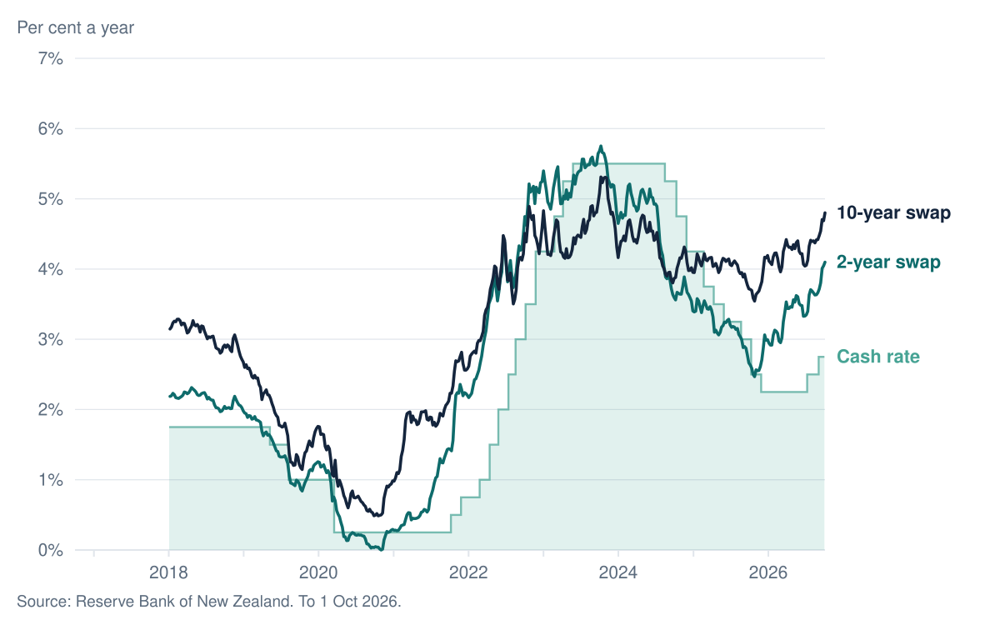
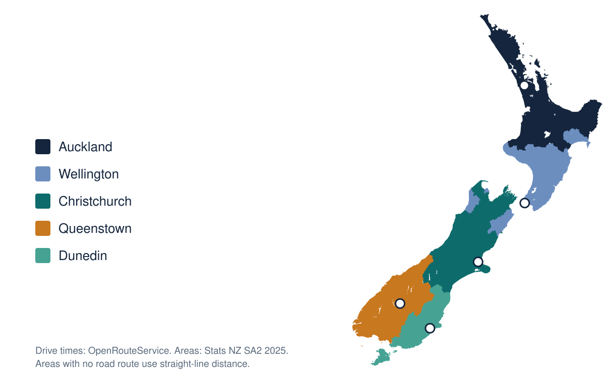

Clients and employers include
Map: each area coloured by the major airport it can drive to fastest. Explore it

Insights
A library of charts and maps, kept up to date.
23 charts on New Zealand and Irish economy, tourism and aviation. Updated 2 October 2026.
Open the chart libraryWhat I do
As a bounded project, or as contract support inside your team. Open any service to see an example.
00How I work
I work in two ways. The first is a bounded project: we agree the question, what you'll receive and when, and I deliver it.
The second is contract support, where I work inside your team for a set period. That might mean reviewing models, writing decision papers, or setting up reporting that keeps running after I leave.
Either way, you get a usable handover: documented models, written-down assumptions, and a walk-through so your team can keep using the work.
Ask about contract support
01Passenger forecasting and planning
I build long-term demand paths for master plans, pricing periods and investment timing.
Forecasts come as scenarios, not a single line, so you can see how much terminal and apron capacity to plan for and when the decision becomes urgent.
At Queenstown Airport I led the long-term passenger forecast that fed pricing and the master plan.
Queenstown Airport
02Airport pricing and financial modelling
I build pricing models that meet Commerce Commission expectations and stand up in airline consultation.
The model sets out the asset base, cost of capital, operating costs and forecast passengers, so everyone can see how a price was reached and test the alternatives.
I've done this for Dunedin Airport, and managed regulated pricing and information disclosure at Queenstown Airport.
Dunedin Airport
03Capacity and scheduling
I set slot coordination, schedule rules and capacity limits that work on a busy day.
That starts with measuring demand hour by hour against what the runway, terminal or wharf can handle, then agreeing rules with the operators who use it.
I introduced Level 3 slot coordination at Queenstown Airport and designed the scheduling system for Milford Sound Port.
Milford Sound Port
04Route development
I build business cases for new routes, along with regional analysis and airline incentive models.
The aim is to show an airline why the route makes sense, using catchment, visitor and fare data, and to show the airport what an incentive is worth.
This work started in network planning at Air New Zealand, and most of my current clients for it are under NDA.
Work under NDA
05Dashboards and reporting
I build Power BI dashboards and charts that your team can keep up to date and use.
Reports refresh from the source data, so you're not rebuilding the same pack each month.
My public chart library is an example: New Zealand and Irish data, refreshed from official sources.
Chart library
06Challenging analytics
I take on messy data, mapping and modelling problems that need more than a spreadsheet.
I use R and Python where Excel runs out, for drive-time catchments, large booking or movement datasets, and automated data pipelines.
The airport catchment map is one example: drive times from every area of New Zealand to its nearest airports.
Airport catchments
Michael Hawley
Ten years on the airline and airport side, now working independently from Dublin.
My background spans Air New Zealand network planning, Auckland Airport commercial analysis and leading aeronautical work at Queenstown Airport. More about me